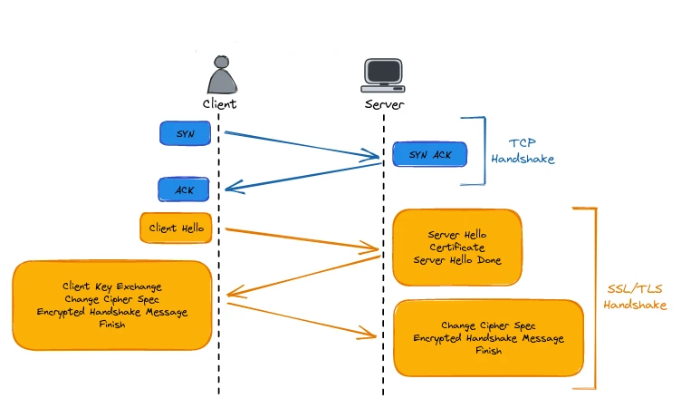
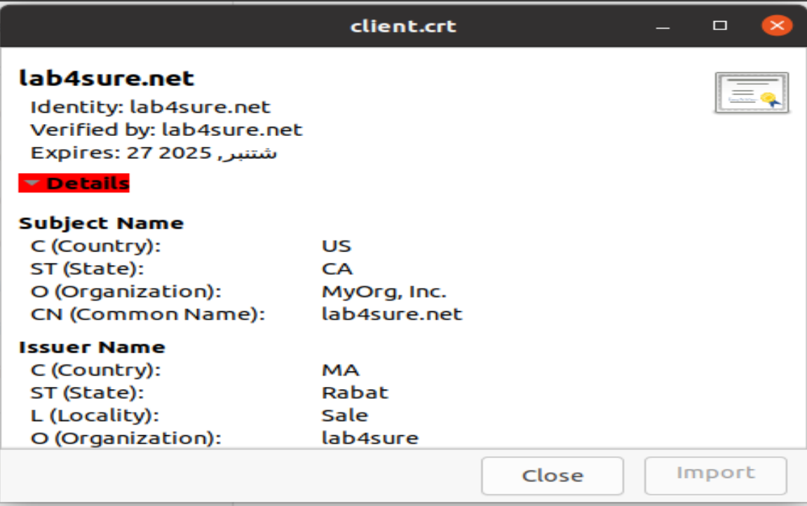
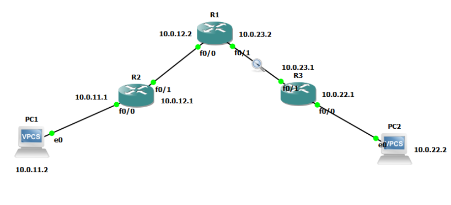

×
Encrypting Data and Communications with SSL/TLS and IPsec
In our interconnected world, data and communication security is of paramount importance.
With the rise of sensitive data exchanges over networks, it is crucial to implement robust protection mechanisms to ensure the confidentiality, integrity, and authenticity of the information exchanged. Data and communication encryption is a fundamental pillar of cybersecurity, offering protection against threats such as data interception, content manipulation, and identity theft.
In this context, protocols such as SSL/TLS (Secure Sockets Layer/Transport Layer Security) and IPsec (Internet Protocol Security) play a crucial role by providing encryption and security mechanisms for Internet and private network communications.
SSL/TLS is widely used to secure online transactions, email communications, and other web applications, while IPsec is primarily used to secure large-scale network connections, such as enterprise networks and VPN (Virtual Private Network) connections.
In this study, we will examine in detail the workings of data and communication encryption with SSL/TLS and IPsec. We will explore the fundamental principles of encryption, the operational mechanisms of SSL/TLS and IPsec, as well as their practical applications in various contexts. By understanding these concepts and mastering these technologies, organizations can enhance their security posture and effectively protect their data and communications against potential threats.
SSL/TLS: Secure Sockets Layer/Transport Layer Security
Secure Sockets Layer (SSL) is a protocol for encrypting HTTP traffic, such as the connections between users' devices and web servers.
ebsites that use SSL encryption have "https://" in their URL instead of "http://".
SSL was replaced several years ago by Transport Layer Security (TLS), but the term "SSL" is still commonly used to refer to the protocol.
In addition to encrypting client-server communications for web browsing, the SSL protocol can also be used in virtual private networks (VPNs).
TCP Handshake
The SSL/TLS session negotiation process, also known as the SSL/TLS handshake, is crucial for establishing a secure connection between a client and a server.
- SYN: The client initiates the connection by sending a SYN (synchronize) message to the server.
- SYN-ACK: The server responds with a SYN-ACK (synchronize-acknowledge) message, acknowledging the receipt of the SYN message.
- ACK: The client acknowledges the server's response with an ACK message. This completes the TCP handshake, establishing a basic connection.
SSL/TLS Handshake
- Client Hello: The client sends a "Client Hello" message to the server. This message includes the SSL/TLS version supported by the client, cipher suites supported by the client, client's random number, and other relevant settings.
- Server Hello: The server responds with a "Server Hello" message, which includes the SSL/TLS version selected by the server, cipher suite selected by the server, and the server's random number.
- Server Certificate: The server sends its digital certificate to the client. This certificate contains the server's public key, the server’s identity details, and the certificate authority's (CA) signature.
- Server Hello Done: The server indicates it has finished its part of the negotiation with a "Server Hello Done" message.
- Client Key Exchange: The client generates a "Pre-Master Secret" and encrypts it with the server's public key (from the server's certificate). The client sends this encrypted "Pre-Master Secret" to the server.
- Change Cipher Spec: The client sends a "Change Cipher Spec" message, indicating that the subsequent messages will be encrypted using the negotiated cipher suite and keys.
- Encrypted Handshake Message: The client sends an encrypted "Finished" message, which includes a hash and MAC (message authentication code) of the entire handshake so far, encrypted with the session key.
- Server Key Exchange and Change Cipher Spec: The server decrypts the "Pre-Master Secret" using its private key, generates the session keys, and sends a "Change Cipher Spec" message to the client.
- Encrypted Handshake Message: The server sends an encrypted "Finished" message to the client, also including a hash and MAC of the entire handshake so far, encrypted with the session key.

SSL/TLS certificates
SSL/TLS certificates are essential for securing communications between a client and a server by encrypting data transmitted over the internet.
They authenticate the server’s identity and enable a secure, encrypted connection, ensuring that sensitive information such as login credentials and payment details are protected from eavesdroppers. Using SSL/TLS certificates is crucial for maintaining privacy and trust on the web.
Creating SSL/TLS Certificates
# Create Root CA (Done once)
# Create Root Key
Attention: this is the key used to sign the certificate requests, anyone holding this can sign certificates on your behalf. So keep it in a safe place!
$ openssl genrsa -des3 -out rootCA.key 4096
If you want a non password protected key just remove the -des3 option
# Create and self sign the Root Certificate
$ openssl req -x509 -new -nodes -key rootCA.key -sha256 -days 1024 -out rootCA.crt
Here we used our root key to create the root certificate that needs to be distributed in all the computers that have to trust us.
# Create a certificate (Done for each server)
This procedure needs to be followed for each server/appliance that needs a trusted certificate from our CA
# Create the certificate key
$ openssl genrsa -out mydomain.com.key 2048
# Create the signing (csr)
The certificate signing request is where you specify the details for the certificate you want to generate. This request will be processed by the owner of the Root key (you in this case since you create it earlier) to generate the certificate.
Important: Please mind that while creating the signing request is important to specify the Common Name providing the IP address or domain name for the service, otherwise the certificate cannot be verified.
I will describe here two ways to generate:
Method A (Interactive)
If you generate the csr in this way, openssl will ask you questions about the certificate to generate like the organization details and the Common Name (CN) that is the web address you are creating the certificate for, e.g mydomain.com.
$ openssl req -new -key mydomain.com.key -out mydomain.com.csr
Method B (One Liner)
This method generates the same output as Method A but it's suitable for use in your automation :) .
$ openssl req -new -sha256 -key mydomain.com.key -subj "/C=US/ST=CA/O=MyOrg, Inc./CN=mydomain.com" -out mydomain.com.csr
If you need to pass additional config you can use the -config parameter, here for example I want to add alternative names to my certificate.
$ openssl req -new -sha256 \
-key mydomain.com.key \
-subj "/C=US/ST=CA/O=MyOrg, Inc./CN=mydomain.com" \
-reqexts SAN \
-config <(cat /etc/ssl/openssl.cnf \
<(printf "\n[SAN]\nsubjectAltName=DNS:mydomain.com,DNS:www.mydomain.com")) \
-out mydomain.com.csr
# Verify the csr's content
$ openssl req -in mydomain.com.csr -noout -text
Generate the certificate using the mydomain csr and key along with the CA Root key
$ openssl x509 -req -in mydomain.com.csr -CA rootCA.crt -CAkey rootCA.key -CAcreateserial -out mydomain.com.crt -days 500 -sha256
# Verify the certificate's content
$ openssl x509 -in mydomain.com.crt -text -noout
here an example of a client certificate:

For a detailed explanation of this topic, watch this video:
Watch the Video
IPsec
IPsec allows securing private data when it is transmitted over a public network. More specifically, IPsec is a group of protocols used together to establish secure connections between devices at the OSI model's layer 3 (the network layer). To do this, IPsec scrambles all messages so that only authorized parties can understand them - a process known as encryption.
IPsec Architecture
The architecture of IPsec relies on several key components, including the Authentication Header (AH), Encapsulating Security Payload (ESP), and Internet Key Exchange (IKE), each having a specific role in securing network communications.
Authentication Header (AH) Protocol
The Authentication Header (AH) protocol provides data authentication and integrity but does not offer confidentiality (no encryption). It adds an additional header to the original IP packet with a checksum based on the content.
Encapsulating Security Payload (ESP)
ESP provides confidentiality, data origin authentication, integrity, and anti-replay protection. It encrypts the payload and encapsulates it within a new IP packet, ensuring that the data remains secure during transmission.
Internet Key Exchange (IKE)
IKE is a protocol used to set up a security association (SA) in the IPsec protocol suite. IKE uses a Diffie-Hellman key exchange to create a shared secret key, which is then used to secure communications between the parties.
IPsec Modes
IPsec operates in two modes: Transport mode , which secures the data payload, and Tunnel mode, which encapsulates and protects the entire IP packet.
For securing network traffic in my project, implementing an IPsec VPN is a strategic choice.
This solution offers versatile configurations, such as site-to-site VPNs for connecting multiple networks securely, or remote access VPNs for secure communication from remote locations.
By leveraging IPsec VPN, you can achieve high levels of data confidentiality, integrity, and authentication, ensuring that your network communication is protected against unauthorized access and cyber threats.
This makes IPsec VPN an ideal choice for enhancing the security and reliability of your network infrastructure.
IPsec VPN Network Simulation

This network simulation showcases a secure communication setup using IPsec VPN to connect two PCs across different network segments. The diagram includes three routers (R1, R2, and R3) and two PCs (PC1 and PC2) with the following configuration:
- PC1 (10.0.11.2) connects to Router R2 via interface e0.
- Router R2 is connected to Router R1 through interface f0/1 (10.0.12.1 to 10.0.12.2).
- Router R1 connects to Router R3 through interface f0/1 (10.0.23.2 to 10.0.23.1).
- Router R3 is connected to PC2 (10.0.22.2) via interface e0.
The primary objective of this setup is to ensure secure data transmission between PC1 and PC2 over the interconnected routers using an IPsec VPN. IPsec, with its encryption and authentication capabilities, protects the data from unauthorized access and tampering as it traverses the network.
In this simulation:
- IPsec Tunnel Mode is employed between Router R2 and Router R3. This mode encapsulates the entire IP packet, providing robust security by encrypting and authenticating the packets as they pass through the routers.
- Data Confidentiality and Integrity are maintained through the use of encryption and hashing algorithms, ensuring that sensitive information is kept private and unaltered.
- Secure Communication is established, enabling PC1 and PC2 to exchange data safely despite the intermediate routers and potential exposure to unsecured networks.
After the configuration of routers to implement an IPsec VPN, the captured packets illustrate the secure transmission of data between the routers using the Encapsulating Security Payload (ESP) protocol.
ESP is a core component of IPsec that provides confidentiality, data origin authentication, and integrity protection of IP packets. In the Wireshark capture, you can observe multiple packets marked as ESP, indicating that the data being transmitted is encrypted and secured. This encryption ensures that the payload is protected from unauthorized access and tampering.
The figure shows ESP packets being exchanged between the IP addresses 10.0.12.1 and 10.0.23.1, which correspond to the interfaces on Routers R2 and R3, respectively. The encapsulated payload is encrypted, as shown by the hex data in the lower pane of the capture. This demonstrates the successful application of the IPsec VPN, ensuring that the communication between the two endpoints (PC1 and PC2) is secure.
For more details on the router configuration and the step-by-step process of setting up the IPsec VPN, please refer to the full report here.